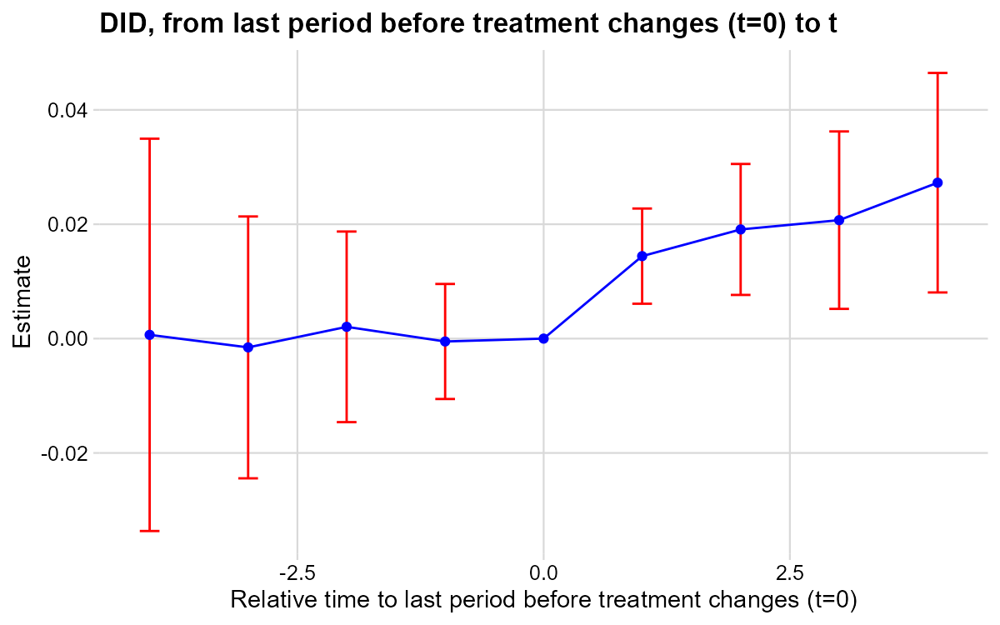
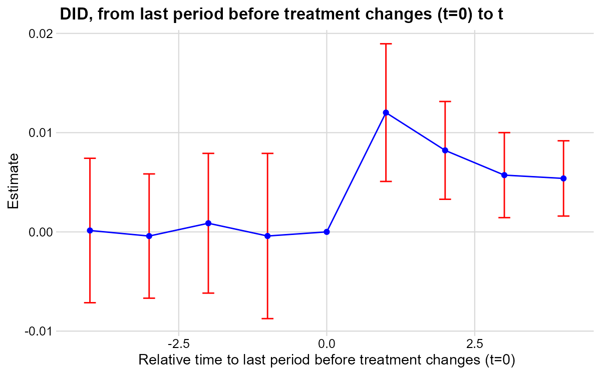

3 Chapter 3: Gentzkow et al. (2011) — Newspapers and Voter Turnout
Research Question: What is the effect of daily newspapers on presidential voter turnout?
Data: Imbalanced panel of 1,195 US counties, presidential election years 1868–1928. Treatment numdailies is discrete multivalued and on-and-off. Outcome: prestout (voter turnout rate).
3.1 T7: Verify Treatment Design
* ssc install did_multiplegt_dyn, replace
copy "https://raw.githubusercontent.com/anzonyquispe/did_book/main/did_applied_book/data/gentzkowetal_didtextbook.dta" "gentzkowetal_didtextbook.dta", replace
use "gentzkowetal_didtextbook.dta", clear
xtset cnty90 year
bysort cnty90 (year): gen first_numdailies = numdailies[1]
tab first_numdailies
gen d_numdailies = .
bysort cnty90 (year): replace d_numdailies = numdailies - numdailies[_n-1]
tab d_numdailiesfirst_numda |
ilies | Freq. Percent Cum.
------------+-----------------------------------
0 | 13,264 78.62 78.62
1 | 1,113 6.60 85.21
2 | 1,332 7.89 93.11
3 | 523 3.10 96.21
4 | 253 1.50 97.71
5 | 185 1.10 98.80
6 | 101 0.60 99.40
7 | 21 0.12 99.53
9 | 16 0.09 99.62
11 | 16 0.09 99.72
12 | 16 0.09 99.81
16 | 16 0.09 99.91
33 | 16 0.09 100.00
------------+-----------------------------------
Total | 16,872 100.00
d_numdailie |
s | Freq. Percent Cum.
------------+-----------------------------------
-9 | 1 0.01 0.01
-6 | 1 0.01 0.01
-4 | 11 0.07 0.08
-3 | 25 0.16 0.24
-2 | 187 1.19 1.44
-1 | 1,618 10.32 11.76
0 | 11,089 70.73 82.49
1 | 2,226 14.20 96.69
2 | 410 2.62 99.30
3 | 76 0.48 99.79
4 | 25 0.16 99.95
5 | 5 0.03 99.98
6 | 1 0.01 99.99
8 | 2 0.01 100.00
------------+-----------------------------------
Total | 15,677 100.00d_numdailies takes both positive and negative values — confirming on-and-off treatment.
# install.packages(c("DIDmultiplegtDYN", "polars", "haven", "dplyr"))
library(haven)
library(dplyr)
library(DIDmultiplegtDYN)
library(polars)
load(url("https://raw.githubusercontent.com/anzonyquispe/did_book/main/did_applied_book/data/gentzkowetal_didtextbook.RData"))
df %>%
group_by(cnty90) %>% arrange(year) %>%
mutate(first_numdailies = first(numdailies)) %>%
ungroup() %>%
count(first_numdailies) %>% print(n = 20)
df %>%
group_by(cnty90) %>% arrange(year) %>%
mutate(d_numdailies = numdailies - lag(numdailies)) %>%
ungroup() %>%
count(d_numdailies) %>% print(n = 20)# A tibble: 13 × 2
first_numdailies n
<dbl> <int>
1 0 13264
2 1 1113
3 2 1332
4 3 523
5 4 253
6 5 185
7 6 101
8 7 21
9 9 16
10 11 16
11 12 16
12 16 16
13 33 16
# A tibble: 15 × 2
d_numdailies n
<dbl> <int>
1 -9 1
2 -6 1
3 -4 11
4 -3 25
5 -2 187
6 -1 1618
7 0 11089
8 1 2226
9 2 410
10 3 76
11 4 25
12 5 5
13 6 1
14 8 2
15 NA 1195d_numdailies takes both positive and negative values — confirming on-and-off treatment.
# pip install did-multiplegt-dyn pandas pyarrow
import pandas as pd
from did_multiplegt_dyn import did_multiplegt_dyn
df = pd.read_parquet("https://raw.githubusercontent.com/anzonyquispe/did_book/main/did_applied_book/data/gentzkowetal_didtextbook.parquet")
df = df.sort_values(["cnty90","year"])
df["first_numdailies"] = df.groupby("cnty90")["numdailies"].transform("first")
df["d_numdailies"] = df.groupby("cnty90")["numdailies"].diff()
print(df["first_numdailies"].value_counts().sort_index())
print(df["d_numdailies"].value_counts().sort_index())first_numdailies
0 13264
1 1113
2 1332
3 523
4 253
5 185
6 101
7 21
9 16
11 16
12 16
16 16
33 16
Name: count, dtype: int64
d_numdailies
-9.0 1
-6.0 1
-4.0 11
-3.0 25
-2.0 187
-1.0 1618
0.0 11089
1.0 2226
2.0 410
3.0 76
4.0 25
5.0 5
6.0 1
8.0 2
Name: count, dtype: int643.2 T8: Non-Normalized Event-Study Effects
* ssc install did_multiplegt_dyn, replace
copy "https://raw.githubusercontent.com/anzonyquispe/did_book/main/did_applied_book/data/gentzkowetal_didtextbook.dta" "gentzkowetal_didtextbook.dta", replace
use "gentzkowetal_didtextbook.dta", clear
did_multiplegt_dyn prestout cnty90 year numdailies, effects(4) placebo(4) effects_equal("all")--------------------------------------------------------------------------------
Estimation of treatment effects: Event-study effects
--------------------------------------------------------------------------------
| Estimate SE LB CI UB CI N Switchers
-------------+------------------------------------------------------------------
Effect_1 | .0144244 .0042477 .0060992 .0227497 5674 1119
Effect_2 | .0190899 .0058429 .0076381 .0305418 4648 1054
Effect_3 | .0207147 .0079164 .0051989 .0362305 3750 984
Effect_4 | .0272653 .0097924 .0080727 .046458 2980 917
--------------------------------------------------------------------------------
Test of joint nullity of the effects : p-value = .00681389
Test of equality of the effects : p-value = .41515197
Av_tot_eff | .0160565 .0047761 .0066956 .0254174 8659 4074
Average number of time periods over which a treatment's effect is accumulated = 2.4376
Placebo_1 | -.0005025 .0051322 -.0105615 .0095565 4471 902
Placebo_2 | .0020594 .0085031 -.0146063 .0187251 2778 746
Placebo_3 | -.0015365 .0116825 -.0244337 .0213607 1644 604
Placebo_4 | .0006573 .0175032 -.0336483 .0349628 910 441
--------------------------------------------------------------------------------
Test of joint nullity of the placebos : p-value = .99219793
# install.packages(c("DIDmultiplegtDYN", "polars"))
library(DIDmultiplegtDYN)
library(polars)
load(url("https://raw.githubusercontent.com/anzonyquispe/did_book/main/did_applied_book/data/gentzkowetal_didtextbook.RData"))
res_t8 <- did_multiplegt_dyn(
df = df,
outcome = "prestout",
group = "cnty90",
time = "year",
treatment = "numdailies",
effects = 4,
placebo = 4,
effects_equal = "all"
)
print(res_t8)
res_t8$plot----------------------------------------------------------------------
Estimation of treatment effects: Event-study effects
----------------------------------------------------------------------
Estimate SE LB CI UB CI N Switchers
Effect_1 0.01442 0.00425 0.00610 0.02275 5,674 1,119
Effect_2 0.01909 0.00584 0.00764 0.03054 4,648 1,054
Effect_3 0.02071 0.00792 0.00520 0.03623 3,750 984
Effect_4 0.02727 0.00979 0.00807 0.04646 2,980 917
Test of joint nullity of the effects : p-value = 0.0068
Test of equality of the effects : p-value = 0.4152
Av_tot_eff | 0.01606 0.00478 0.00670 0.02542 8,659 4,074
Average number of time periods over which a treatment effect is accumulated: 2.4376
Placebo_1 -0.00050 0.00513 -0.01056 0.00956 4,418 902
Placebo_2 0.00206 0.00850 -0.01461 0.01873 2,764 746
Placebo_3 -0.00154 0.01168 -0.02443 0.02136 1,636 604
Placebo_4 0.00066 0.01750 -0.03365 0.03496 907 441
Test of joint nullity of the placebos : p-value = 0.9922
# pip install py-did-multiplegt-dyn pandas pyarrow
import pandas as pd
import polars as pl
import matplotlib
matplotlib.use('Agg')
import matplotlib.pyplot as plt
from did_multiplegt_dyn import DidMultiplegtDyn
df = pd.read_parquet("https://raw.githubusercontent.com/anzonyquispe/did_book/main/did_applied_book/data/gentzkowetal_didtextbook.parquet")
res_t8 = DidMultiplegtDyn(
df=pl.from_pandas(df), outcome="prestout", group="cnty90",
time="year", treatment="numdailies",
effects=4, placebo=4, effects_equal=True
)
res_t8.fit()
res_t8.summary()
res_t8.plot()
plt.savefig("ch09_fig5_newspapers_nonnorm_py.png", dpi=150, bbox_inches="tight")
plt.close()----------------------------------------------------------------------
Estimation of treatment effects: Event-study effects
----------------------------------------------------------------------
Estimate SE LB CI UB CI N Switchers
Effect_1 0.014424 0.004248 0.006099 0.022750 5674 1119
Effect_2 0.019090 0.005843 0.007638 0.030542 4648 1054
Effect_3 0.020715 0.007916 0.005199 0.036230 3750 984
Effect_4 0.027265 0.009792 0.008073 0.046458 2980 917
Test of joint nullity of the effects : p-value = 0.006814
Test of equality of the effects : p-value = 0.415152
Av_tot_eff | 0.016056 0.004776 0.006696 0.025417 8659 4074
Average number of time periods over which a treatment's effect is accumulated = 2.4376
Placebo_1 -0.000503 0.005132 -0.010562 0.009557 4471 902
Placebo_2 0.002059 0.008503 -0.014606 0.018725 2778 746
Placebo_3 -0.001537 0.011683 -0.024434 0.021361 1644 604
Placebo_4 0.000657 0.017503 -0.033648 0.034963 910 441
Test of joint nullity of the placebos : p-value = 0.992198
Interpretation: Being exposed to a weakly larger number of newspapers for one electoral cycle increases turnout by 1.4pp. Effects grow up to 2.7pp after four cycles. Pre-trends are jointly insignificant (p = 0.99).
3.3 T9: Treatment Path Descriptions
* ssc install did_multiplegt_dyn, replace
copy "https://raw.githubusercontent.com/anzonyquispe/did_book/main/did_applied_book/data/gentzkowetal_didtextbook.dta" "gentzkowetal_didtextbook.dta", replace
use "gentzkowetal_didtextbook.dta", clear
did_multiplegt_dyn prestout cnty90 year numdailies, effects(2) design(0.8, console)--------------------------------------------------------------------------------
Estimation of treatment effects: Event-study effects
--------------------------------------------------------------------------------
| Estimate SE LB CI UB CI N Switchers
-------------+------------------------------------------------------------------
Effect_1 | .0144244 .0042477 .0060992 .0227497 5674 1119
Effect_2 | .0190899 .0058429 .0076381 .0305418 4648 1054
--------------------------------------------------------------------------------
Test of joint nullity of the effects : p-value = .00148173
Av_tot_eff | .014327 .003989 .0065087 .0221454 6754 2173
Average number of time periods over which a treatment's effect is accumulated = 1.5211379
--------------------------------------------------------------------------------
Detection of treatment paths - 2 periods after first switch
--------------------------------------------------------------------------------
| #Groups %Groups ℓ=0 ℓ=1 ℓ=2
-------------+-------------------------------------------------------
TreatPath1 | 343 32.15 0 1 1
TreatPath2 | 187 17.53 0 1 0
TreatPath3 | 131 12.28 0 1 2
TreatPath4 | 57 5.342 0 2 2
TreatPath5 | 47 4.405 0 2 1
TreatPath6 | 33 3.093 1 2 2
TreatPath7 | 30 2.812 0 1 3
TreatPath8 | 22 2.062 2 3 2
TreatPath9 | 20 1.874 2 1 1
--------------------------------------------------------------------------------
Treatment paths detected in at least 80.00% of the switching groups: Total % = 81.54%# install.packages(c("DIDmultiplegtDYN", "polars"))
library(DIDmultiplegtDYN)
library(polars)
load(url("https://raw.githubusercontent.com/anzonyquispe/did_book/main/did_applied_book/data/gentzkowetal_didtextbook.RData"))
res_t9 <- did_multiplegt_dyn(
df = df,
outcome = "prestout",
group = "cnty90",
time = "year",
treatment = "numdailies",
effects = 2,
design = list(0.8, "console")
)
print(res_t9)----------------------------------------------------------------------
Estimation of treatment effects: Event-study effects
----------------------------------------------------------------------
Estimate SE LB CI UB CI N Switchers
Effect_1 0.01442 0.00425 0.00610 0.02275 5,674 1,119
Effect_2 0.01909 0.00584 0.00764 0.03054 4,648 1,054
Test of joint nullity of the effects : p-value = 0.0015
Av_tot_eff | 0.01433 0.00399 0.00651 0.02215 6,754 2,173
Average number of time periods over which a treatment effect is accumulated: 1.5211
----------------------------------------------------------------------
Detection of treatment paths - 2 periods after first switch
----------------------------------------------------------------------
N Share ℓ=0 ℓ=1 ℓ=2
TreatPath1 343 32.15 0 1 1
TreatPath2 187 17.53 0 1 0
TreatPath3 131 12.28 0 1 2
TreatPath4 57 5.34 0 2 2
TreatPath5 47 4.40 0 2 1
TreatPath6 33 3.09 1 2 2
TreatPath7 30 2.81 0 1 3
TreatPath8 22 2.06 2 3 2
TreatPath9 20 1.87 2 1 1
Treatment paths detected in at least 80.00% of the 1067 switching groups (Total % = 81.54%)# pip install py-did-multiplegt-dyn pandas pyarrow
import pandas as pd
import polars as pl
from did_multiplegt_dyn import DidMultiplegtDyn
df = pd.read_parquet("https://raw.githubusercontent.com/anzonyquispe/did_book/main/did_applied_book/data/gentzkowetal_didtextbook.parquet")
res_t9 = DidMultiplegtDyn(
df=pl.from_pandas(df), outcome="prestout", group="cnty90",
time="year", treatment="numdailies",
effects=2, design=(0.8, "console")
)
res_t9.fit()
res_t9.summary()================================================================================
Detection of treatment paths - 2 periods after first switch
================================================================================
#Groups %Groups l=0 l=1 l=2
TreatPath1 343 32.146204 0.0 1.0 1.0
TreatPath2 187 17.525773 0.0 1.0 0.0
TreatPath3 131 12.277413 0.0 1.0 2.0
TreatPath4 57 5.342081 0.0 2.0 2.0
TreatPath5 47 4.404873 0.0 2.0 1.0
TreatPath6 33 3.092784 1.0 2.0 2.0
TreatPath7 30 2.811621 0.0 1.0 3.0
TreatPath8 22 2.061856 2.0 3.0 2.0
TreatPath9 20 1.874414 2.0 1.0 1.0
TreatPath10 18 1.686973 2.0 3.0 3.0
================================================================================
Treatment paths detected in switching groups: 1067
Total % shown: 83.22%
================================================================================
Estimation of treatment effects: Event-study effects
================================================================================
Block Estimate SE LB CI UB CI N Switchers
Effect_1 0.014424 0.004248 0.006099 0.022750 5674.0 1119.0
Effect_2 0.019090 0.005843 0.007638 0.030542 4648.0 1054.0
Average_Total_Effect 0.014327 0.003989 0.006509 0.022145 6754.0 2173.0
Placebo_1 -0.000502 0.005132 -0.010561 0.009557 4471.0 902.0
================================================================================
Test of joint nullity of the effects: p-value = 0.001482Interpretation: 32% of effects in Effect_2 come from counties that went from 0 to 1 newspaper and stayed. 17.5% come from counties that gained then lost a newspaper (on-and-off).
3.4 T10: Normalized Event-Study Effects
* ssc install did_multiplegt_dyn, replace
copy "https://raw.githubusercontent.com/anzonyquispe/did_book/main/did_applied_book/data/gentzkowetal_didtextbook.dta" "gentzkowetal_didtextbook.dta", replace
use "gentzkowetal_didtextbook.dta", clear
did_multiplegt_dyn prestout cnty90 year numdailies, effects(4) placebo(4) normalized normalized_weights effects_equal("all")--------------------------------------------------------------------------------
Estimation of treatment effects: Event-study effects
--------------------------------------------------------------------------------
| Estimate SE LB CI UB CI N Switchers
-------------+------------------------------------------------------------------
Effect_1 | .0120186 .0035392 .0050819 .0189552 5674 1119
Effect_2 | .0082126 .0025136 .0032859 .0131392 4648 1054
Effect_3 | .0057192 .0021857 .0014354 .010003 3750 984
Effect_4 | .0053873 .0019348 .0015951 .0091795 2980 917
--------------------------------------------------------------------------------
Test of joint nullity of the effects : p-value = .00681389
Test of equality of the effects : p-value = .16525779
| ℓ=1 ℓ=2 ℓ=3 ℓ=4
k=0 | 1.0000 0.4849 0.3549 0.2777
k=1 | . 0.5151 0.3131 0.2568
k=2 | . . 0.3319 0.2271
k=3 | . . . 0.2383
Total | 1.0000 1.0000 1.0000 1.0000
# install.packages(c("DIDmultiplegtDYN", "polars"))
library(DIDmultiplegtDYN)
library(polars)
load(url("https://raw.githubusercontent.com/anzonyquispe/did_book/main/did_applied_book/data/gentzkowetal_didtextbook.RData"))
res_t10 <- did_multiplegt_dyn(
df = df,
outcome = "prestout",
group = "cnty90",
time = "year",
treatment = "numdailies",
effects = 4,
placebo = 4,
normalized = TRUE,
normalized_weights = TRUE,
effects_equal = "all"
)
print(res_t10)
res_t10$plot----------------------------------------------------------------------
Estimation of treatment effects: Event-study effects
----------------------------------------------------------------------
Estimate SE LB CI UB CI N Switchers
Effect_1 0.01202 0.00354 0.00508 0.01896 5,674 1,119
Effect_2 0.00821 0.00251 0.00329 0.01314 4,648 1,054
Effect_3 0.00572 0.00219 0.00144 0.01000 3,750 984
Effect_4 0.00539 0.00193 0.00160 0.00918 2,980 917
Test of joint nullity of the effects : p-value = 0.0068
Test of equality of the effects : p-value = 0.1653
Av_tot_eff | 0.01606 0.00478 0.00670 0.02542 8,659 4,074
------------------------------------------------------------
Weights on treatment lags
------------------------------------------------------------
ℓ=1 ℓ=2 ℓ=3 ℓ=4
k=0 1.000 0.485 0.355 0.278
k=1 NA 0.515 0.313 0.257
k=2 NA NA 0.332 0.227
k=3 NA NA NA 0.238
Total 1.000 1.000 1.000 1.000
Test of joint nullity of the placebos : p-value = 0.9922
# pip install py-did-multiplegt-dyn pandas pyarrow
import pandas as pd
import polars as pl
import matplotlib
matplotlib.use('Agg')
import matplotlib.pyplot as plt
from did_multiplegt_dyn import DidMultiplegtDyn
df = pd.read_parquet("https://raw.githubusercontent.com/anzonyquispe/did_book/main/did_applied_book/data/gentzkowetal_didtextbook.parquet")
res_t10 = DidMultiplegtDyn(
df=pl.from_pandas(df), outcome="prestout", group="cnty90",
time="year", treatment="numdailies",
effects=4, placebo=4, normalized=True, normalized_weights=True, effects_equal=True
)
res_t10.fit()
res_t10.summary()
res_t10.plot()
plt.savefig("ch09_fig6_newspapers_norm_py.png", dpi=150, bbox_inches="tight")
plt.close()----------------------------------------------------------------------
Estimation of treatment effects: Event-study effects
----------------------------------------------------------------------
Estimate SE LB CI UB CI N Switchers
Effect_1 0.012019 0.003539 0.005082 0.018955 5674 1119
Effect_2 0.008213 0.002514 0.003286 0.013139 4648 1054
Effect_3 0.005719 0.002186 0.001435 0.010003 3750 984
Effect_4 0.005387 0.001935 0.001595 0.009180 2980 917
Test of joint nullity of the effects : p-value = 0.006814
Test of equality of the effects : p-value = 0.165258
Av_tot_eff | 0.016056 0.004776 0.006696 0.025417 8659 4074
Interpretation: Normalized effects decrease with ℓ (from 0.012 to 0.005), suggesting lagged newspapers have smaller effects than contemporaneous newspapers. One cannot reject equality (p = 0.17).
3.5 T11: Joint Test — No Lagged Treatment Effect + Constant Effects
* ssc install did_multiplegt_dyn, replace
copy "https://raw.githubusercontent.com/anzonyquispe/did_book/main/did_applied_book/data/gentzkowetal_didtextbook.dta" "gentzkowetal_didtextbook.dta", replace
use "gentzkowetal_didtextbook.dta", clear
* first_change and same_treat_after_first_change are included in the dataset
did_multiplegt_dyn prestout cnty90 year numdailies if year <= first_change | same_treat_after_first_change == 1, effects(2) effects_equal("all") same_switchers | Estimate SE LB CI UB CI N Switchers
-------------+------------------------------------------------------------------
Effect_1 | .01525 .0058956 .0036949 .0268052 5019 512
Effect_2 | .0164091 .0073633 .0019773 .0308409 4101 512
--------------------------------------------------------------------------------
Test of joint nullity of the effects : p-value = .02913029
Test of equality of the effects : p-value = .83016668# install.packages(c("DIDmultiplegtDYN", "polars"))
library(DIDmultiplegtDYN)
library(polars)
load(url("https://raw.githubusercontent.com/anzonyquispe/did_book/main/did_applied_book/data/gentzkowetal_didtextbook.RData"))
df_sub <- df[df$year <= df$first_change | df$same_treat_after_first_change == 1, ]
res_t11 <- did_multiplegt_dyn(
df = df_sub,
outcome = "prestout",
group = "cnty90",
time = "year",
treatment = "numdailies",
effects = 2,
effects_equal = "all",
same_switchers = TRUE
)
print(res_t11)
res_t11$plot Estimate SE LB CI UB CI N Switchers
Effect_1 0.01525 0.00590 0.00369 0.02681 5,019 512
Effect_2 0.01641 0.00736 0.00198 0.03084 4,101 512
Test of joint nullity of the effects : p-value = 0.0291303
Test of equality of the effects : p-value = 0.8301667
# pip install py-did-multiplegt-dyn pandas pyarrow
import pandas as pd
import polars as pl
import matplotlib
matplotlib.use('Agg')
import matplotlib.pyplot as plt
from did_multiplegt_dyn import DidMultiplegtDyn
df = pd.read_parquet("https://raw.githubusercontent.com/anzonyquispe/did_book/main/did_applied_book/data/gentzkowetal_didtextbook.parquet")
df_sub = df[(df["year"] <= df["first_change"]) |
(df["same_treat_after_first_change"] == 1)].copy()
res_t11 = DidMultiplegtDyn(
df=pl.from_pandas(df_sub), outcome="prestout", group="cnty90",
time="year", treatment="numdailies",
effects=2, effects_equal=True, same_switchers=True
)
res_t11.fit()
res_t11.summary()
res_t11.plot()
plt.savefig("ch09_fig_newspapers_sameswitchers_py.png", dpi=150, bbox_inches="tight")
plt.close() Estimate SE LB CI UB CI N Switchers
Effect_1 0.015250 0.005896 0.003695 0.026805 5019 512
Effect_2 0.016409 0.007363 0.001977 0.030841 4101 512
Test of joint nullity of the effects : p-value = 0.029130
Test of equality of the effects : p-value = 0.830167Interpretation: With p = 0.83, we cannot reject that the two effects are equal, supporting the “no dynamic effects” hypothesis for this subsample.